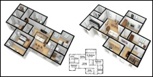
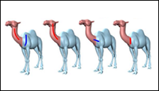
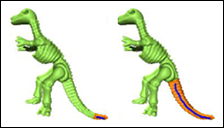

2019
A Late Fusion CNN for Digital Matting
Yunke Zhang, Lixue Gong,
Lubin Fan, Peiran Ren
Qixing Huang, Hujun Bao, Weiwei Xu
CVPR, 2019.
[project page]
[pdf]
[video]
[slides]
2018

MIQP-based Layout Design for Building Interiors
Wenming Wu,
Lubin Fan*, Ligang Liu, Peter Wonka
Computer Graphics Forum (Proc. of Eurographics),
Vol. 37 No. 2, pp. 511-521, 2018. (* corresponding author)
[project page]
[pdf]
[video]
[slides]
2016

A Probabilistic Model for Exteriors of Residential Buildings
Lubin Fan and Peter Wonka
ACM Transactions on Graphics (presented at SIGGRAPH),
Vol. 35, No. 5, Article 155, 2016.
[project page]
[pdf]
[video]
[slides]
2014

Structure Completion for Facade Layouts
Lubin Fan , Przemyslaw Musialski, Ligang Liu, Peter Wonka
ACM Transactions on Graphics (Proc. of SIGGRAPH Asia),
Vol. 33, No. 6, Article 210, 2014.
[project page]
[pdf]
[video]
[slides]
2013

Modeling by Drawing with Shadow Guidance
Lubin Fan , Ruimin Wang, Linlin Xu, Jiansong Deng, Ligang Liu
Computer Graphics Forum (Proc. of Pacific Graphics),
Vol. 32, No. 7, pp. 157-166, 2013.
[project page]
[pdf]
[video]
[slides]
2012

Co-Segmentation of 3D Shape via Subspace Clustering
Ruizhen Hu,
Lubin Fan and Ligang Liu.
Computer Graphics Forum (Proc. of Symposium on Geometry Processing),
Vol. 31, No. 5, pp. 1703-1711, 2012.
[project page]
[pdf]
[video]
[slides]

Sketch-based Mesh Cutting: A Comparative Study
Lubin Fan, Min Meng, and Ligang Liu.
Graphical Models, Vol. 74, No.6, pp. 292-301, 2012.
[project page]
[pdf]
2011

iCutter: A Direct Cut Out Tool for 3D Shapes
Min Meng,
Lubin Fan and Ligang Liu.
Journal of Computer Animation and Virutal Worlds,
Vol. 22, No. 4, pp. 335-342, 2011.
[project page]
[pdf]
[video]
[slides]

Paint Mesh Cutting
Lubin Fan, Ligang Liu, and Kun Liu.
Computer Graphics Forum (Proc. of Eurographics),
Vol. 30, No. 2, pp. 287-296, 2011.
[project page]
[pdf]
[video]
[slides]

A Comparative Evaluation of Foreground/Background Sketch-based Mesh Segmentation Algorithms
Min Meng,
Lubin Fan, and Ligang Liu.
Computers & Graphics (Proc. of Shape Modeling International),
Vol. 35, No. 3, pp. 650-660, 2011.
[project page]
[pdf]
[slides]